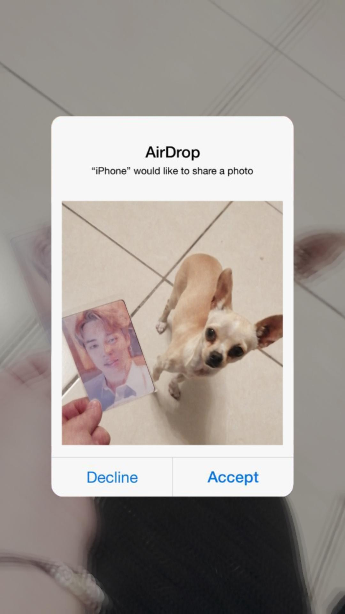

Mis recuersos favoritos
En la vida he pasos cosa muy buenas y otras demasiado malas, sin embargo me gusta mucho recordarlos apesar de todo, puesto que me ayudan a poder reflexionar sobre ello en la vida diaria, es por ello que hablara de las cosas que mas recuerdo con felicidad a lo largo de mi vida, pues me gusta darlo a conocer,puede que esta platica en presencial sea muy interesante para ambos pues son algunos de ellos, con mi familia o mis amigo e incluso amigos perrunos que ahora extraño, sin saber que algun dia ellos se irian por eso hablara de ellos.
Hace menos de un mes mi perrita mimi fallecio, mientras la enterrabamos, estaba recordando el dia que ella llego a casa, mimi tenia en ese entonces de 1 a 2 años cuando llego al negocio de mi papa, y despues de que estuviera alli por mas de 4 horas mi papa le dio de comer y la trajo a casa para ver si podiamos encontrale un hogar, cuando llego era muy noble y timida, ademas estana muy sucia y tenia un alambre al rededor del cuello y esto la lastimaba, despues de un rato mi mama comento que queria quedarse con ella, despues de varios dias empezamos a buscar un nombre y mi hermana opto por mimi, a todos nos gusto y ella se convirtio en la guardiana de mi casa durante 13 años hasta el dia 11 de febrero, mimi cerro sus ojitos para tomar un sueño profunto
Otro recuerdo que tengo con ella es aquella vez que estaba embarazada de 8 perritos en su pancita, ahora bien enfrente de nuestra casa habian 2 perritos muy groceros pues siempre amenazaban con morde a mi hermana o a mi, una vez en la tarde mientras llegabamos de la escuela mi hermana con 5 años corrio por la calle, y a consecuencia de esto los perritos se la hecharon encima , mi mama en ese instante abrio la puerta para entar a casa, sin embargo, mimi salio rapidamente a protejer a mi hermana, los perritos tuvieron miedo a mimi y no volvieron a molestarnos, es de mis momentos favoritos por que mimi estaba embarazada.
Nezu
Quien ahora me cuida es nezu una chihuahua que es muy traviesa, antes de que nostros la tuvieramos ella llego a nosotros con un dueño ya grande de edad que no podia ya tenerla, a nezu la conocimos de 1 mes de nacida, nunca pensamos que ella estuviera destinada a nosotros pues, la veiamos solo de lejos, el dia que llego nezu a casa estaba muy flaquita y timida pues no le gustaba convivir y es asi como por una caricatura pusimos es nombre a nezu ahora esta sana y muy feliz
Wokery solin
Estos dos perritos al igual que nezuko son chihuahuas pero son mas amigables que nezuko con personas que no conocen, con ellos tengo un recuerdo en particular, pues simpre les gusta pelear y despues jugar una vez mientras estabamos de paseo, ambos corrieron tan fuerte que sin dase cuenta uno choco con el otro provocando un buen de vueltas, al principio pense que ellos se habian lastimado pero siguieron como si nada, lo mas gracioso es que uno de ellos especificamente solin me volteo a ver con una carita de confundido, es por ello que me gusta salir con ellos pues son muy divertidos